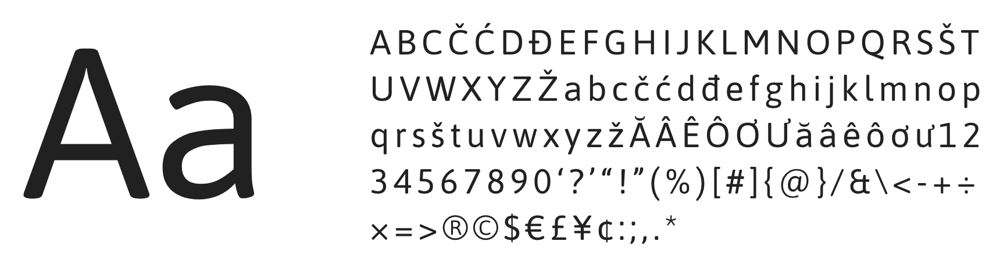
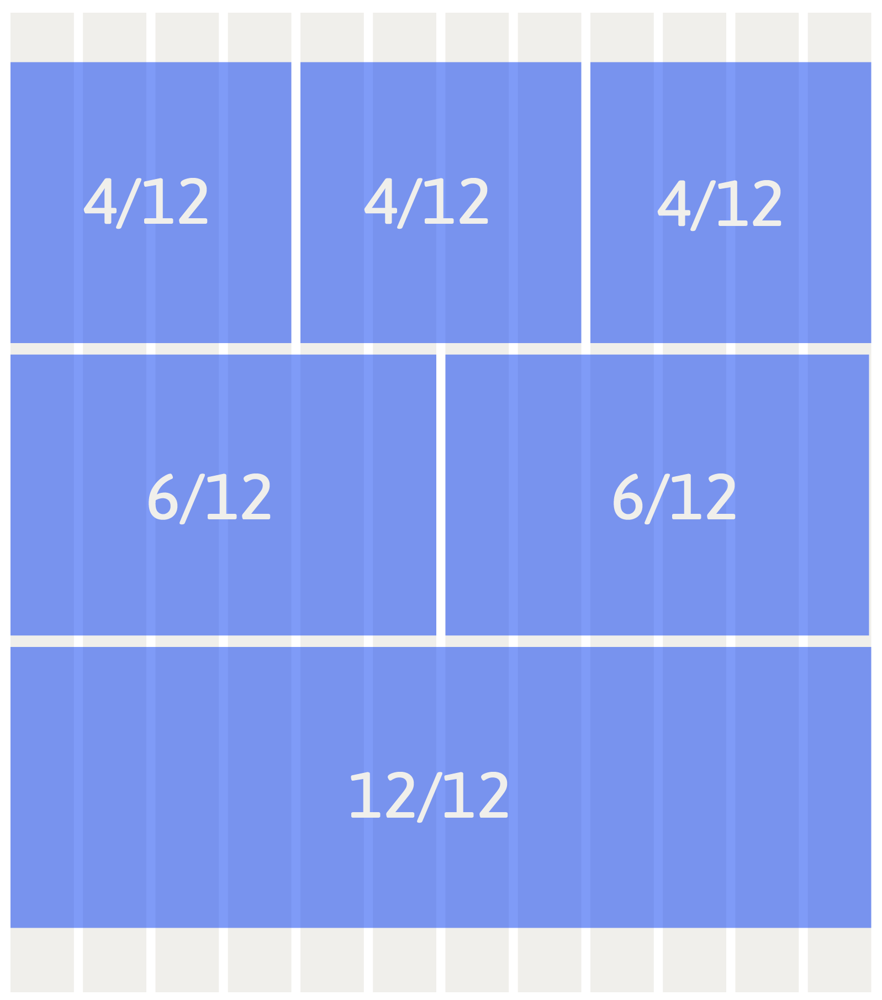
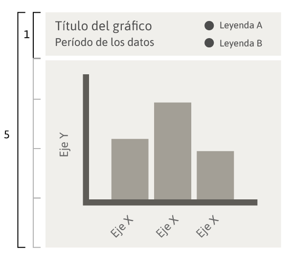

La única fuente que se utiliza tanto dentro de los gráficos como en la construcción de un Dashboard es Asap. Forma parte de la librería de Google Fonts, es de uso libre y puede ser implementada de manera remota utilizando el código que provee Google.

Se puede utilizar en su versión Regular, Bold o Destacado
La propuesta de color consiste en la utilización de una escala de grises más un color destacado que se activa en las interacciones del usuario con los gráficos.
Existe una paleta de color primaria que puede ser complementada o reemplazada según los requerimientos específicos de los gráficos. Estas excepciones se encuentran detalladas en las reglas de utilización de cada gráfico.
La consistencia en el uso del color es primordial para el cumplimiento de la función de las 3 paletas propuestas a continuación:
Todos los gráficos llevan un cuadrado de fondo del gris más claro
Paleta de color primaria
Compuesta por una escala de 6 grises y 1 azul como color destacado. Los gráficos deben ser construidos en escala de grises y el azul será activado en la medida que el usuario interactúe con los gráficos. Esta paleta se utiliza para todos los gráficos con excepción de algunos casos detallados más adelante.
La cantidad de grises a utilizar por gráfico depende del número de grupos y variables a comparar. Estos usos se encuentran detallados en las reglas de utilización de cada gráfico.
Las paletas definidas en cada uno de los gráficos no debería sustituirse por otros. Se recomienda no agregar nuevos colores.
Paleta de color secundaria
Compuesta por una escala de azules y celestes, se utiliza únicamente para el gráfico de líneas, en el cual es necesario identificar un alto número de variables de manera simultánea.
Paleta de color semáforo o de connotación negativa/positiva
Compuesta por verde, amarillo y rojo, esta paleta se utiliza únicamente para gráficos en que se necesita reconocer una connotación positiva, negativa y/o neutra, siendo necesario identificar dichas fluctuaciones en el tiempo. Ejemplos: KPI, resultados de satisfacción, resultados positivos/negativos, etc.
El área del dashboard donde van los gráficos está construido en base a una grilla de 12 columnas. De esta manera, los gráficos a construir ocuparán un espacio determinado de la grilla: 4, 6 o 12 columnas de ancho. El alto de cada gráfico puede variar según los datos que está mostrando, pero debe siempre mantenerse el mismo alto para todos los que se encuentren en la misma fila.

A su vez, el área dentro de un gráfico está divido de manera vertical, ocupando 1/5 de su alto en el título del gráfico, subtítulo y leyenda si fuera necesaria.
Utilizar títulos y leyendas en todos los gráficos es clave para la claridad y entendimiento de la información presentada en los reportes web. Todos los gráficos deberían llevar un título y en la mayoría de los casos declarar el período en el cual se están midiendo los datos.
Cada uno de los gráficos tiene reservado el 1/5 de su alto para los campos de títulos y leyendas. Por lo general se recomienda el uso de textos cortos y abreviaciones.
En el caso de las leyenda en el eje y, deben ir de manera vertical, con lectura de abajo hacia arriba. Las leyendas del eje x, deben ir de manera horizontal en caso de que el espacio total lo permita. Si los ítems del eje x son muy largos, más de 5 caracteres, éstos deben posicionarse en 45º, permitiendo así la lectura eficiente de cada gráfico.

BIBLIOTECA DE GRÁFICOS